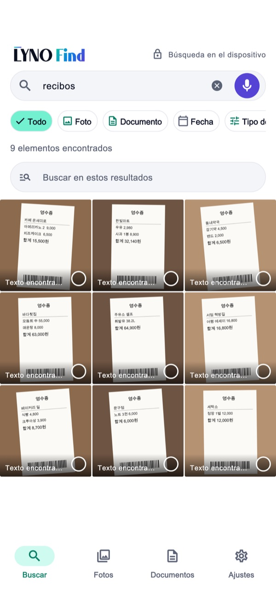
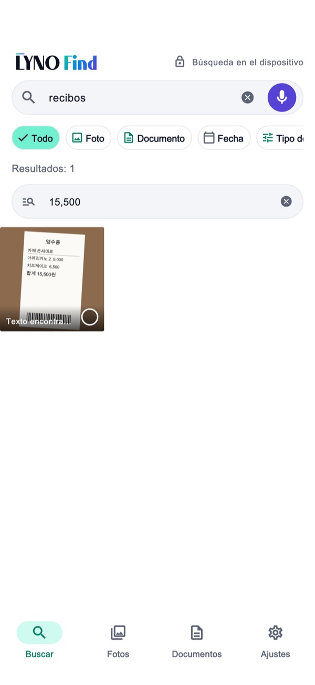

Buscar con más precisión
1. Escribe solo lo que buscas
Solo las palabras que buscas es lo más preciso. LYNO Find busca a la vez en lo que muestran las fotos, el texto de las fotos y el texto de los documentos. Aún no se buscan videos.

Ejemplos: gato recibo contraseña del wifi
2. Busca por nombre de carpeta
Escribe el nombre de una carpeta inteligente activada y sus fotos aparecerán debajo de los resultados. Escribe dos o tres separados por espacios para ver solo las fotos que están en todas.
Ejemplos: perro playa atardecer
3. Separa varias palabras con puntos · Búsqueda múltiple
Las palabras separadas por puntos (.) o comas (,) forman una búsqueda múltiple. Primero salen las fotos con todas, después las que tienen solo algunas. Al abrir una foto en grande ves cuántas veces se encontró cada palabra.
Solo con espacios se busca la frase tal cual, útil para una frase de un documento.
Sobre los resultados verás cuántas fotos tienen todas las palabras y cuántas tiene cada una. Si una búsqueda con espacios encuentra pocas fotos, aparece el botón «Buscar por separado».
Primero espacios; para varias cosas, puntos. Las palabras con espacios (Japón playa) dejan solo las fotos que cumplen todas: búsqueda estrecha y exacta. Las palabras separadas por puntos (perro. gato. mar) se buscan cada una por separado y se muestran juntas, primero las que tienen todas. Si con espacios encuentras poco, toca "Buscar por separado".
Ejemplos: perro. gato. playa
4. Solo dilo · Búsqueda por voz
Toca el micrófono y habla. LYNO Find se queda con las palabras importantes y muestra primero las fotos donde salen juntas.
iPhone · SiriSin abrir la app, dile a Siri «Búscalo en LYNO Find» y, cuando pregunte qué buscar, contesta algo como «fotos de perro». Solo verás fotos. «Documentos de contrato» muestra documentos, y solo «perro», ambos.
Búscalo en LYNO Find Busca en LYNO Find Busca con LYNO Find Busca documentos en LYNO Find
Mantén pulsado el icono de la app y toca «Búsqueda por voz», o toca el micrófono del widget, para buscar por voz al instante.
Ejemplos: busca fotos de mi gato en la playa
5. Añade el lugar o la fecha
Escribe lo que buscas junto con el lugar donde se tomó y solo se buscará entre las fotos tomadas allí, según la ubicación guardada en cada foto. También funciona con la búsqueda por voz. Puedes añadir cuándo, también.
Ejemplos: Japón playa Madrid selfie playa verano pasado recibo octubre 2026
6. Busca otra vez en los resultados
Escribe otra palabra en «Buscar en estos resultados», encima de los resultados, para buscar solo entre ellos. Por ejemplo: busca playa y, dentro, gato.
